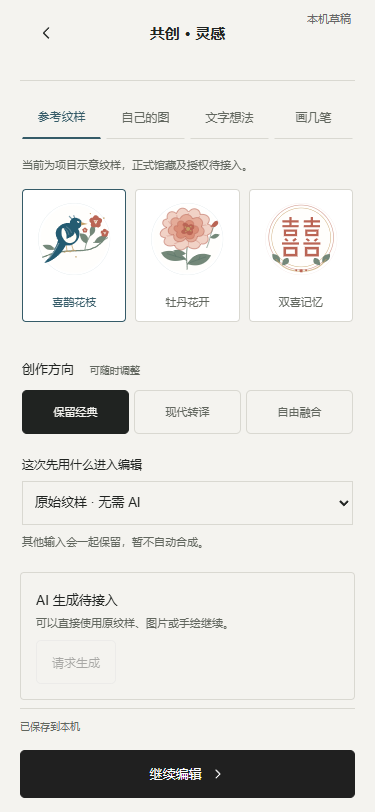

北京业务空间的真实请求已返回一张 1024 × 1024 PNG，输入为项目自绘的樱桃和喜鹊花枝。查看模型原图。本机服务仅向百炼提交当次同意的素材，图片由服务器取回。工作台支持继续编辑、候选历史与草稿恢复。限额、取消与交互恢复以录入的真实结果回放验证，账户的实际扣费以百炼账单为准。
qwen-image-2.1-turbo，用于将个人素材和参考纹样转为平面印花。百炼图像编辑接口DASHSCOPE_API_KEY 中。密钥不写入报告、网页或仓库。| 条件 | 当前证据 | 恢复本轮前需要补齐 |
|---|---|---|
| 获授权的生成服务与额度 | prototype/services.js只定义provider注册接口；应用没有配置AI provider。当前运行环境中检查的OPENAI_API_KEY、AZURE_OPENAI_API_KEY、AI_API_KEY、AI_BASE_URL、AI_PROXY_URL均未设置。未发现项目根目录.env配置。仅检查是否存在，没有读取或输出凭证值；这不能证明其他机器或账户没有服务。 | 明确服务供应商、模型/图像编辑能力、获授权账号、可用额度与测试预算。凭证通过受控服务端配置，不能贴进聊天或前端。 |
| 服务端代理运行环境 | scripts/serve.cjs是监听127.0.0.1的静态文件服务，无生成代理、服务身份验证、限流、任务记录或审核端点。 | 确定由谁维护代理、运行位置、鉴权和访问权限；配置同源代理或受限跨域、请求大小/超时/限额、日志脱敏与服务端任务状态。 |
| 凭证保管方式 | 没有项目级密钥注入/轮换方案。.gitignore当前仅排除node_modules。静态服务器可读取项目目录中的文件，因此不能将未来密钥文件放进其可访问根目录。 | 服务端环境变量或密钥管理服务，凭证位于静态公开目录之外；限制静态目录、排除环境文件/仓库内部文件、避免打包或日志泄漏。浏览器仅请求项目代理，不能携带供应商密钥。 |
| 用户输入处理授权 | 现有上传确认仅声明合法使用权并保存在当前浏览器。AI区域预留通用发送确认，但无指定处理方、用途、保留期限、训练使用、删除方式等项目确认记录。 | 针对选定服务核对当前条款与项目要求，明确图像/文本/草图发送内容、处理方、用途、存储与删除方式、保留期限及训练使用设置；保存对应说明版本和用户主动确认。现有“本机保存”同意不能替代外发授权。 |
| 馆藏素材与审核 | 当前素材主要是明确标注的项目示意；未发现正式馆藏图像供外部生成使用的授权。也没有项目确认的生成内容审核规则。 | 确定允许发送的素材目录及授权范围，配置供应商可用审核与项目复核规则、拒绝说明和处理流程。没有授权的馆藏资料不得作为真实馆藏输入。 |
用户已指定同济大学人工智能服务平台，并提供 Base URL：https://agi.tongji.edu.cn/v1。这是用户提供的接入信息，尚未完成认证请求验证。用户授权使用学校提供的 DeepSeek API；凭证未写入本清单或前端代码。截图显示文本生成与图像理解能力，不能据此认定支持图片生成。平台页面代码包含图像生成协议支持，但仍需目标模型的准确 API model 标识、模型调用示例与账号对应权限。登录页面的浏览器读取连续超时，不能声称已核验登录后的模型权限。
下一项需要：目标模型的调用示例（隐藏密钥），优先图像生成或图像编辑模型。若只有文本模型，须另行明确是否接受文字辅助或矢量纹样方案，不能将它当作已实现图像生成。此前测试记录属于本地功能检查；此次仅补充接入信息，未发送生成请求、未重新运行构建或交互测试。
Services.configure / request、AbortSignal、未配置/请求中/成功/失败/取消状态可复用。当前服务测试使用本地测试适配器，并非供应商端到端验收。浏览器检查结果 · 79项自动测试日志 · 语法检查 · 构建记录
仅新增本检查清单、scripts/qa-round09-readiness.cjs、docs/round09-readiness-results.json、round09-tests.txt、round09-lint.txt、round09-build.txt与previews/round09-unconfigured-*.png。没有修改业务源文件或添加API配置。
原入口继续可用：本地H5。需启动时，在项目目录设置$env:PORT='8879'后执行npm start。

390px截图。本轮到此暂停；正式馆藏、云端发布、官方积分和工厂授权仍未接入。